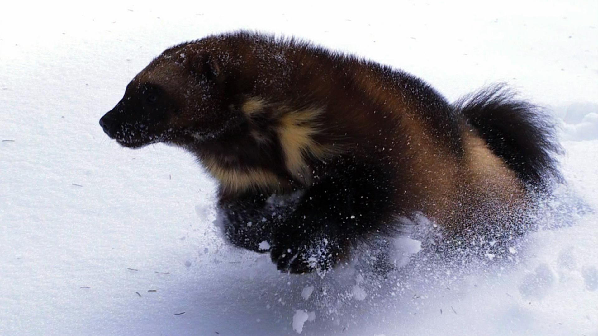
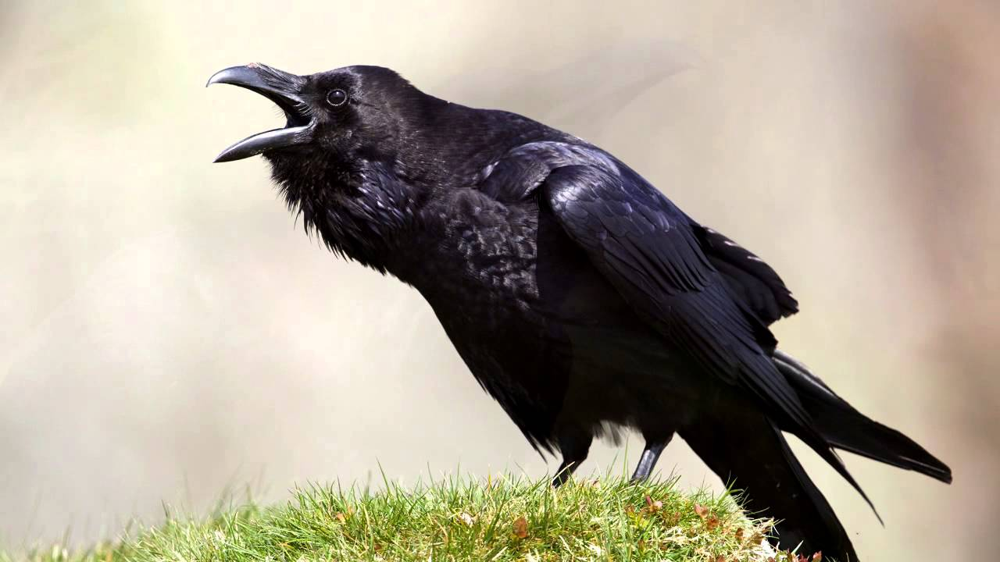
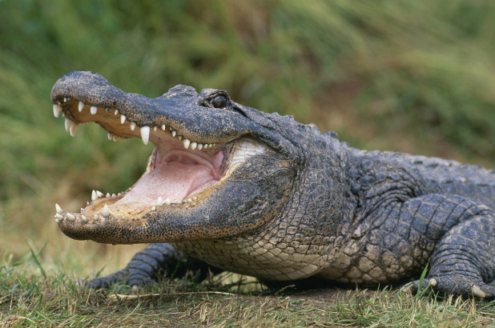
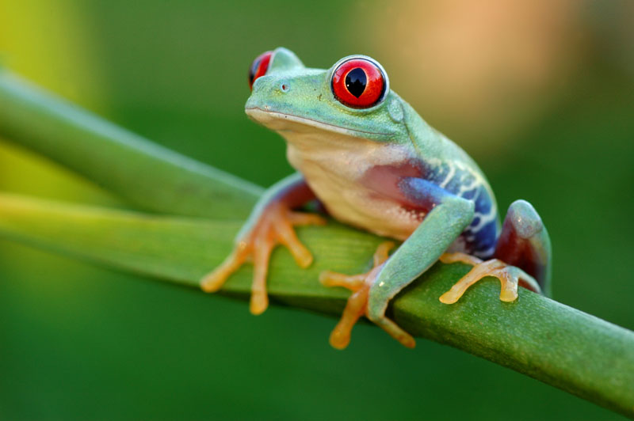
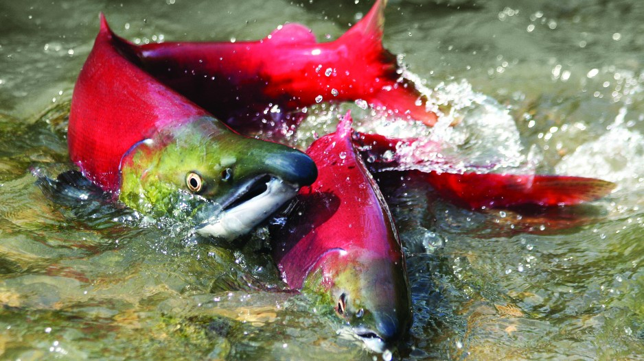

Mammals are warm blooded creatures that are usually covered in fur and birth their young alive.
Bats are the only mammals that can fly. All mammals except anteaters have teeth. All babies
drink milk from their mothers. All mammals have a backbone (vertebrae), and have there skeleton
on the inside.

Wolverine
Kingdom : Animalia
Phylum : Chordata
Class : Mammalia
Order : Carnivora
Family : Mustelidae
Genus : Gulo
Species : G.gulo
Birds
Birds have feathers, wings, lay eggs and are warm blooded. They have hollow bones
used to fly. Some species are smart enough to create their own tools. The chicken
is the most common bird found in the world.

North American Raven
Kingdom : Animalia
Phylum : Chordata
Class : Aves
Order : Passeriformes
Family : Corvidae
Genus : Corvus
Species : C. corax
Reptiles
All reptiles lay shelled eggs and breathe air. They are covered in scales or have a bon external plate such as a shell.
Reptiles are cold blooded. The first reptiles are believed to have evolved around 320 million years ago.
The size of reptile's brains relative to their body is much smaller than that of mammals.

American Alligator
Kingdom : Animalia
Phylum : Chordata
Class : Reptilia
Order : Crocodilia
Family : Alligatoridae
Genus : Alligator
Species : A. mississippiensis
Amphibians
Amphibians are cold-blooded and are vertebrates just like mammals, birds, fish, and
reptiles. They can live in and out of water. When they are young they use their gills
to breathe in water but when they get older they use lungs. They must keep their skin moist.

Red Eyed Tree Frog
Kingdom : Animalia
Phylum : Chordata
Class : Amphibia
Order : Anura
Family : Hylidae
Genus : Agalychnis
Species : A. callidryas
Fish
Fish are vertebrates who live underwater and use gills to breathe. Some fish are carnivores
that eat other fish and insects while other fish are omnivores that eat both plants and
animals. Fish are cold-blooded and some can live in salt water like oceans and seas.

Pacific Salmon
Kingdom : Animalia
Phylum : Chordata
Class : Actinopterygii
Order : Salmoniformes
Family : Salmonidae
Subfamily : Salmonidae
Genus : Oncorhynchus
Arthropods
Arthropods are invertebrates with an exoskeleton, with segmented body and jointed
limbs. They must molt there exoskeleton for it does not grow like their body does.
Arthropods can be divided into 13 classes which include
crustaceans, insects, arachnids, centipedes, millipedes, sea spiders, pauropods, symphylans,
springtails, proturans, two-pronged bristletails, three-pronged bristletails, and king crabs.